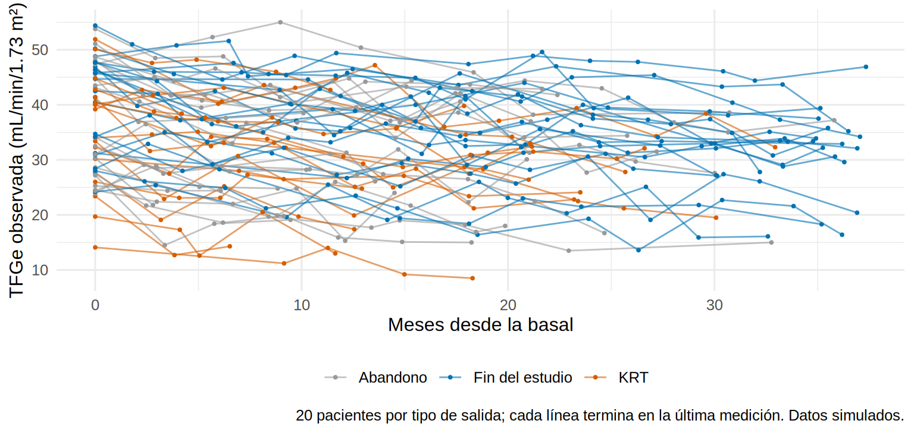
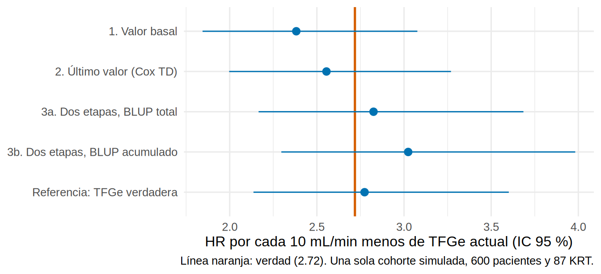

Trayectorias y modelos conjuntos (joint models): visión general
Nota🩺 Escenario
Don Ramón tiene 62 años, ERC G4 y tres TFGe seguidas: 32, 28 y 24 mL/min/1.73 m². Tu pregunta no es “¿qué pendiente tiene?” (eso fue 14.3), sino “¿cuánto riesgo de empezar diálisis o trasplante (KRT) tiene ahora, dado que su función renal viene cayendo así?”. Dos errores tentadores: usar solo su TFGe basal (ignora lo que pasó después) o usar su última TFGe como si fuera una constante (ignora el error de medición y que ya tiene meses de antigüedad). Los modelos conjuntos nacieron para esta pregunta.
Lo que vamos a hacer
Entender por qué una medición repetida como la TFGe es una covariable “difícil” para un modelo de supervivencia.
Estimar la asociación TFGe → KRT con tres enfoques (valor basal, Cox con último valor y dos etapas con BLUP) y compararlos con la verdad.
Conocer la estructura de un modelo conjunto y el código de JM y JMbayes2, además de las trayectorias latentes.
Datos simulados (ckd_largo, los de 14.3). Conocemos la verdad: el riesgo instantáneo de KRT depende de la TFGe verdadera y actual del paciente, con un coeficiente de −0.10 por cada mL/min, es decir un HR de 2.72 por cada 10 mL/min menos (e^1.0). La TFGe observada tiene además un error de medición de 3 mL/min y se mide solo cada ~3 meses.
Paso 1. Por qué la TFGe es una covariable difícil
En un Cox corriente la covariable (edad, sexo) se conoce al inicio y no cambia. La TFGe, en cambio, tiene cuatro rarezas:
Cambia con el tiempo: lo que importa es su valor actual, no el basal.
Se mide con error (un laboratorio no da la TFGe verdadera).
Se mide solo en las visitas (cada ~3 meses, irregulares): entre visita y visita, el valor que conoces está desactualizado.
Es endógena: depende del propio paciente y deja de medirse cuando ocurre el evento (tras el KRT ya no hay TFGe). No es como la temperatura ambiente, que existe aunque el paciente ya no esté.
La tercera y la cuarta se ven al dibujar algunas trayectorias, separadas por cómo terminó el seguimiento:
library(tidyverse)library(lme4)library(survival)source("R/funciones_epi.R")source("R/funciones_extra_a.R")source("R/funciones_extra_cap14.R")source("R/simular_ckd_largo.R")theme_set(theme_minimal(base_size =12))pac <-read_csv("Bases/ckd_largo_pacientes.csv", show_col_types =FALSE) |>mutate(edad_c = edad -64, luacr_c =log(uacr) -5.2)lg <-read_csv("Bases/ckd_largo.csv", show_col_types =FALSE)oraculo <-read_csv("Bases/ckd_largo_oraculo.csv", show_col_types =FALSE)d <- lg |>left_join(pac, by ="id") |>mutate(anios = mes /12, trat =factor(tratamiento, 0:1, c("Sin iSGLT2", "iSGLT2")))set.seed(146)muestra <- pac |>group_by(salida) |>slice_sample(n =20) |>pull(id) # 20 pacientes de cada desenlaced |>filter(id %in% muestra) |>ggplot(aes(mes, tfge, group = id, color = salida)) +geom_line(alpha =0.6) +geom_point(size =0.7) +scale_color_manual(values =c("Abandono"="#999999", "Fin del estudio"="#0072B2", "KRT"="#D55E00"), name =NULL) +labs(x ="Meses desde la basal", y ="TFGe observada (mL/min/1.73 m²)",caption ="20 pacientes por tipo de salida; cada línea termina en la última medición. Datos simulados.") +theme(legend.position ="bottom")

Qué vemos. Los pacientes que terminan en KRT (naranja) tienen una TFGe más baja y cada línea se corta cuando ocurre el evento. Las mediciones son esporádicas y ruidosas. Con estos ingredientes (87 KRT en 600 pacientes), ¿cuánto sube el riesgo por cada 10 mL/min menos de TFGe?
Para expresar el resultado usaremos siempre la misma escala: el HR por cada 10 mL/min menos, que en un Cox con TFGe/10 es exp(-coeficiente) (verdad: 2.72).
El HR es 2.38 (IC 95 % 1.84 a 3.08), por debajo de 2.72. Un solo estudio no demuestra un sesgo (lo veremos en el Paso 5), pero la dirección es la esperada: la TFGe del día 0 no es la TFGe de cuando ocurre el evento (en promedio, 18 meses después) ni está libre de error de medición, así que la asociación se atenúa.
Paso 3. Cox con covariable dependiente del tiempo: el último valor
La idea natural: en cada momento en que ocurre un KRT, comparar al paciente que lo tuvo con los demás pacientes que seguían en riesgo, usando el último valor de TFGe medido hasta ese momento (el LOCF). Para eso los datos deben pasar a formato de proceso de conteo: una fila por paciente y por cada momento en que hay un evento en la cohorte, con intervalo (t0, t1]. La función armar_riesgos() (en R/funciones_extra_cap14.R) lo hace:
Cada fila dice: “en el mes t1, este paciente seguía en riesgo, evento indica si ese día tuvo el KRT, y su TFGe más reciente (ultimo) la midieron hace meses_desde_med meses”. El Cox se ajusta con Surv(t0, t1, evento):
Min. 1st Qu. Median Mean 3rd Qu. Max.
0.000 0.920 1.830 2.212 3.000 16.000
El HR sube a 2.56, mejor que el basal pero aún por debajo de 2.72. Dos razones, ambas visibles en estos datos: el último valor tiene en la mediana 1.8 meses de antigüedad (hasta 16) y lleva el error de medición completo (3 mL/min de un paciente cuya TFGe verdadera varía entre pacientes con una DE de ~8). Medir con error una covariable atenúa su efecto hacia el nulo (la “dilución por regresión” de siempre).
Paso 4. Dos etapas: primero la trayectoria, luego el Cox
Si el problema es el error y la antigüedad, hay que estimar la TFGe verdadera actual de cada paciente con el modelo mixto de 14.3 (que usa todas sus mediciones y toma “prestada” fuerza de los demás) y usar esa estimación en el Cox. Es el enfoque en dos etapas (two-stage, regression calibration):
Etapa 1. Ajustar el modelo mixto de la TFGe (por tramos, con intercepto y pendiente aleatorios) y predecir la TFGe de cada paciente en cada momento.
Etapa 2. Usar esa predicción como covariable dependiente del tiempo en el Cox.
La clave está en qué datos usa la predicción de la etapa 1. Probamos las dos opciones: el BLUP con todas las mediciones del paciente (blup_total(), “mira al futuro”) y el BLUP acumulado, que solo usa lo medido hasta ese momento (blup_acumulado(), la que se podría calcular en vivo):
m_tr <-lmer(tfge ~ trat * (pmin(anios, 0.5) +pmax(anios -0.5, 0)) + edad_c + dm + luacr_c + (1+ anios | id), data = d)cp$blup_ac <-blup_acumulado(m_tr, d, cp$id, cp$t1 /12) # solo con lo medido hasta t1cp$blup_tot <-blup_total(m_tr, d, cp$id, cp$t1 /12) # con TODAS las mediciones (también las posteriores)cp |>summarise(across(c(ultimo, blup_ac, blup_tot), list(media = mean, de = sd))) |>pivot_longer(everything(), names_to =c("covariable", ".value"), names_sep ="_(?=[^_]+$)") |>mutate(across(where(is.numeric), \(x) round(x, 1)))
# A tibble: 3 × 3
covariable media de
<chr> <dbl> <dbl>
1 ultimo 32.9 8.6
2 blup_ac 32.2 7.8
3 blup_tot 32.2 8
La TFGe predicha tiene aproximadamente el mismo promedio pero es menos ruidosa (menor DE entre filas) que el último valor observado. Etapa 2:
cox_ac <-coxph(Surv(t0, t1, evento) ~I(blup_ac /10), data = cp)cox_tot <-coxph(Surv(t0, t1, evento) ~I(blup_tot /10), data = cp)# Referencia que solo existe en una simulación: la TFGe verdadera y actual de cada pacientecp$verdadera <-tfge_verdadera(oraculo, cp$id, cp$t1)cox_ver <-coxph(Surv(t0, t1, evento) ~I(verdadera /10), data = cp)comparacion <-bind_rows(`1. Valor basal`=hr10(cox_basal),`2. Último valor (Cox TD)`=hr10(cox_ultimo),`3a. Dos etapas, BLUP total`=hr10(cox_tot),`3b. Dos etapas, BLUP acumulado`=hr10(cox_ac),`Referencia: TFGe verdadera`=hr10(cox_ver), .id ="enfoque")comparacion |>mutate(across(where(is.numeric), \(x) round(x, 2)))
# A tibble: 5 × 4
enfoque HR_por_10_menos ic_inf ic_sup
<chr> <dbl> <dbl> <dbl>
1 1. Valor basal 2.38 1.84 3.08
2 2. Último valor (Cox TD) 2.56 2 3.27
3 3a. Dos etapas, BLUP total 2.82 2.17 3.68
4 3b. Dos etapas, BLUP acumulado 3.02 2.3 3.98
5 Referencia: TFGe verdadera 2.77 2.14 3.6
comparacion |>mutate(enfoque =fct_rev(fct_inorder(enfoque))) |>ggplot(aes(HR_por_10_menos, enfoque)) +geom_vline(xintercept =exp(1), color ="#D55E00", linewidth =0.9) +geom_pointrange(aes(xmin = ic_inf, xmax = ic_sup), color ="#0072B2") +labs(x ="HR por cada 10 mL/min menos de TFGe actual (IC 95 %)", y =NULL,caption ="Línea naranja: verdad (2.72). Una sola cohorte simulada, 600 pacientes y 87 KRT.")

Qué vemos (una cohorte). El valor basal (2.38) y el último valor (2.56) quedan por debajo de la verdad (2.72); las dos variantes de dos etapas (2.82 y 3.02) quedan al nivel de la referencia con la TFGe verdadera (2.77) o por encima. Con solo 87 eventos los intervalos son amplios y se solapan todos: una cohorte no basta para juzgar un sesgo. Repitamos el experimento con cohortes nuevas.
Paso 5. ¿Sesgo o azar? Repitiendo el experimento
replica_cox_td() simula una cohorte nueva (misma verdad) y estima la asociación con los mismos cinco enfoques. La repetimos 15 veces; el coeficiente verdadero es −1.0 por cada 10 mL/min:
rep_res <- replicas |>group_by(enfoque) |>summarise(media =mean(coef), ee =mean(ee), de =sd(coef))atenuacion <- \(e) 100* (1- (-rep_res$media[rep_res$enfoque == e])) # % de atenuación respecto de -1.0
Qué vemos (15 cohortes).
Valor basal: coeficiente medio -0.75, es decir, una atenuación de ≈ 25 % de la asociación verdadera.
Último valor: -0.86 (atenuación de ≈ 14 %). Mejor que el basal, pero sigue sesgado hacia el nulo.
Dos etapas: -0.93 con el BLUP total y -0.98 con el acumulado; la referencia con la TFGe verdadera da -0.97. Aquí el sesgo es pequeño, pero con 15 cohortes la incertidumbre del promedio (~0.04) impide afirmar diferencias finas entre las dos variantes.
Sobre la precisión: el error estándar promedio que reporta el Cox de dos etapas (0.14) es menor que la variabilidad real de la estimación entre cohortes (0.17), como se espera si el Cox trata la predicción como un dato conocido. Con 15 réplicas esa diferencia es ruidosa, pero apunta en la dirección que predice la teoría (limitación 1, abajo).
Los sesgos del enfoque en dos etapas, uno por uno
Que en esta simulación el sesgo sea modesto no significa que el método sea seguro. Las limitaciones teóricas son:
Error de la etapa 1 ignorado. El BLUP es una estimación; el Cox lo toma como un valor exacto y los errores estándar tienden a ser demasiado pequeños. Con pocas mediciones por paciente (visitas esporádicas) es peor.
Mirar al futuro (BLUP total). Para un paciente que sigue observado, el BLUP incluye mediciones posteriores al momento del riesgo; para uno que tuvo el evento, no hay futuro. La covariable no es la misma información en ambos y no se podría calcular en tiempo real. El BLUP acumulado evita este problema, pero obliga a recalcular el modelo con cada momento.
La etapa 1 ignora que el seguimiento se corta por el evento. El modelo mixto de la TFGe se ajusta como si las mediciones que faltan después del KRT o del abandono fueran ignorables; si el evento depende de la trayectoria (aquí depende de la TFGe verdadera), la trayectoria media y los efectos aleatorios quedan sesgados (el “abandono informativo” de 14.3, Paso 6).
El último valor (LOCF) sufre error de medición y antigüedad, como vimos.
Un modelo conjunto resuelve las limitaciones 1 y 3 estimando ambos submodelos a la vez.
Paso 6. El modelo conjunto: dos submodelos que comparten los efectos aleatorios
Un modelo conjunto (joint model de datos longitudinales y de tiempo hasta el evento) combina:
un submodelo longitudinal: el modelo mixto de la TFGe, \(y_i(t) = m_i(t) + \varepsilon_i(t)\) con \(m_i(t) = x_i(t)^\top\beta + z_i(t)^\top b_i\);
un submodelo de supervivencia: \(h_i(t) = h_0(t)\,\exp\{\gamma^\top w_i + \alpha\, m_i(t)\}\),
donde \(m_i(t)\) es la trayectoria verdadera (sin error) del paciente y \(\alpha\) el parámetro de asociación: el logaritmo del HR por unidad de TFGe actual. Los dos submodelos están ligados por los efectos aleatorios \(b_i\) y se estiman juntos (máxima verosimilitud o enfoque bayesiano). En nuestra simulación, \(\alpha\) verdadero es −0.10.
Ventajas: corrige el error de medición, propaga la incertidumbre de la trayectoria, tolera que el seguimiento se corte por el evento y permite predicciones dinámicas (el riesgo de Don Ramón se actualiza con cada nueva TFGe). También permite otras asociaciones: la pendiente actual, la TFGe acumulada (área bajo la curva) o solo los efectos aleatorios. Costo: más tiempo de cómputo, más supuestos (la trayectoria correctamente especificada) y menos paquetes que lo ofrezcan.
Con el paquete JM (Rizopoulos, 2010; código no verificado en el entorno de pruebas del libro, donde JM no está instalado):
library(JM)library(nlme)pac_jm <- pac |>arrange(id) |># una fila por paciente, mismo orden de los id que en dmutate(t_anios = tiempo_seg_meses /12, trat =factor(tratamiento, 0:1, c("Sin iSGLT2", "iSGLT2")))# Submodelo longitudinal (con nlme::lme; JM no usa lmer)lme_jm <-lme(tfge ~ trat * (pmin(anios, 0.5) +pmax(anios -0.5, 0)) + edad_c + dm + luacr_c,random =~1+ anios | id, data = d)# Submodelo de supervivencia (x = TRUE es obligatorio para JM)cox_jm <-coxph(Surv(t_anios, krt) ~ trat + edad_c + dm + luacr_c, data = pac_jm, x =TRUE)jm1 <-jointModel(lme_jm, cox_jm, timeVar ="anios", method ="piecewise-PH-aGH")summary(jm1) # busca la fila `Assoct`: es alfa (por mL/min)exp(-10* jm1$coefficients$alpha) # HR por cada 10 mL/min MENOS; verdad 2.72
Con JMbayes2 (enfoque bayesiano; más flexible y con formas funcionales de asociación y predicciones dinámicas; también código no verificado aquí):
library(JMbayes2)# Mismos lme_jm y cox_jm del bloque anteriorjm2 <-jm(cox_jm, lme_jm, time_var ="anios",functional_forms =~value(tfge)) # asociación con el VALOR actual de la TFGesummary(jm2) # parte de supervivencia: fila `value(tfge)` = alfa# Otras asociaciones: valor y pendiente actuales# jm3 <- jm(cox_jm, lme_jm, time_var = "anios", functional_forms = ~ value(tfge) + slope(tfge))
Si todo va bien, alfa debería quedar cerca de −0.10 por mL/min (HR ≈ 2.72 por 10 mL/min menos), con un intervalo más honesto que el del Cox de dos etapas. (En el entorno donde se escribió este libro no pudimos ejecutar ninguno de los dos paquetes; si los usas, verifica la convergencia y compara con el enfoque de dos etapas del Paso 4.)
Paso 7. Trayectorias latentes: ¿hay “tipos” de pacientes?
Otra pregunta distinta: en lugar de asociar la trayectoria con un evento, ¿hay subgrupos de pacientes con trayectorias distintas? (progresadores rápidos, estables, con caída tardía). Los modelos de clases latentes de trayectorias (latent class growth / growth mixture models; paquete lcmm) estiman cuántos grupos hay y a cuál pertenece cada paciente. Con lcmm (código no verificado aquí):
library(lcmm)m1 <-hlme(tfge ~ anios, random =~ anios, subject ="id", ng =1, data =as.data.frame(d)) # una sola clasem3 <-gridsearch(hlme(tfge ~ anios, mixture =~ anios, random =~ anios, subject ="id", ng =3,data =as.data.frame(d)), rep =20, maxiter =30, minit = m1) # tres clasessummarytable(m1, m3) # compara BIC, entropía, tamaños
La versión propia, mucho más simple y solo descriptiva: agrupar a los pacientes según el nivel y la pendiente de su BLUP (kmeans). No es un modelo (no hay incertidumbre en la pertenencia ni criterio de información para elegir el número de clases), pero sirve para explorar:
set.seed(1460)re <-ranef(m_tr)$idperfil <-tibble(id =as.integer(rownames(re)), nivel = re[, 1], pendiente = re[, 2])km <-kmeans(scale(perfil[, c("nivel", "pendiente")]), centers =3, nstart =25)perfil$grupo <- km$clusterresumen_grupos <- perfil |>left_join(pac |>select(id, krt, tratamiento), by ="id") |>group_by(grupo) |>summarise(pacientes =n(), nivel =mean(nivel), pendiente =mean(pendiente), pct_krt =100*mean(krt), pct_iSGLT2 =100*mean(tratamiento)) |>arrange(desc(pct_krt)) # de mayor a menor proporción de KRTresumen_grupos |>mutate(across(where(is.numeric), \(x) round(x, 1)))
Qué vemos.nivel y pendiente son desviaciones respecto del promedio (en mL/min y mL/min por año; una pendiente positiva es una caída más lenta que el promedio). El grupo con más KRT (23 %) es el de nivel más bajo (-6.1 mL/min); el de menos KRT (6 %) tiene la caída más lenta (pendiente 1.9). El tratamiento se reparte parecido entre grupos (46-51 % con iSGLT2). Cuidado con interpretar esto: las clases se construyeron con toda la trayectoria, incluida la que precede al KRT, así que parte de la asociación es circular (los pacientes que tuvieron KRT aportan trayectorias con TFGe baja por construcción). Para un pronóstico hay que clasificar con datos hasta el momento de la predicción, que es justamente lo que hace un modelo conjunto.
Advertencia⚠️ Trampas frecuentes
Usar la trayectoria completa del paciente para predecir su evento. Si la covariable usa datos posteriores al momento del riesgo (BLUP con todas las mediciones, clases latentes de toda la trayectoria), el pronóstico mira al futuro y no se puede usar en la práctica. La covariable debe construirse solo con lo conocido hasta ese momento.
Dar por válido el error estándar del Cox de dos etapas. Trata la TFGe predicha como un dato exacto. Si el análisis importa (un estudio, una guía), remuestrea (bootstrap de pacientes completos, repitiendo ambas etapas) o usa un modelo conjunto.
Creer que un LOCF “controla” la covariable. El último valor está desactualizado y medido con error: el HR queda atenuado (aquí ≈ 14 %).
Tip💡 Cuándo basta algo más simple
Si solo quieres un pronóstico con la TFGe de hoy (sin interés en la asociación causal), un modelo de punto de referencia (landmark: ajustar un Cox en un momento fijo, p. ej. a los 12 meses, con el valor y la pendiente hasta ahí) es sencillo, sin supuestos de trayectoria y suele bastar.
Si el marcador es poco ruidoso y se mide a menudo (p. ej. peso diario), el Cox con último valor da un sesgo pequeño.
Si el interés es un efecto causal del tratamiento sobre la supervivencia y la TFGe es un mediador o un confusor que cambia con el tiempo, el problema pasa a ser el de los tratamientos y confusores dependientes del tiempo: métodos G y modelos estructurales marginales (Cap. 19).
Importante🎯 En resumen
La TFGe es una covariable endógena, medida con error y observada a intervalos: no se puede tratar como una covariable fija ni como una constante entre visitas.
Con la verdad conocida (HR 2.72 por 10 mL/min menos), el valor basal atenúa la asociación ≈ 25 % y el último valor (Cox dependiente del tiempo) ≈ 14 % (promedio de 15 cohortes).
El enfoque en dos etapas con BLUP corrige gran parte (coeficiente medio -0.98 frente a −1.0), pero ignora la incertidumbre de la primera etapa y, si usa mediciones posteriores, mira al futuro.
Un modelo conjunto (JM, JMbayes2) estima ambos submodelos a la vez, corrige el error de medición y permite predicciones dinámicas; es la herramienta de referencia cuando la trayectoria y el evento están ligados.
Las trayectorias latentes (lcmm) describen subgrupos de pacientes; para pronosticar, clasifica solo con datos hasta el momento de la predicción.
Ejercicio
Calcula, con armar_riesgos(), el número de pacientes en riesgo en el primer, el décimo y el último evento. ¿Cuántos tienen su último valor con más de 3 meses de antigüedad en cada momento?
Ajusta el Cox con dos covariables del último valor: ultimo y el tratamiento (tratamiento). ¿Cambia el HR del último valor? En esta simulación el riesgo depende solo de la TFGe actual: ¿qué esperas del coeficiente del tratamiento?
Repite el experimento del Paso 5 con n = 300 pacientes por cohorte (argumento n de replica_cox_td(), 10 réplicas). ¿Cambia la atenuación del último valor? ¿Y la variabilidad entre cohortes?